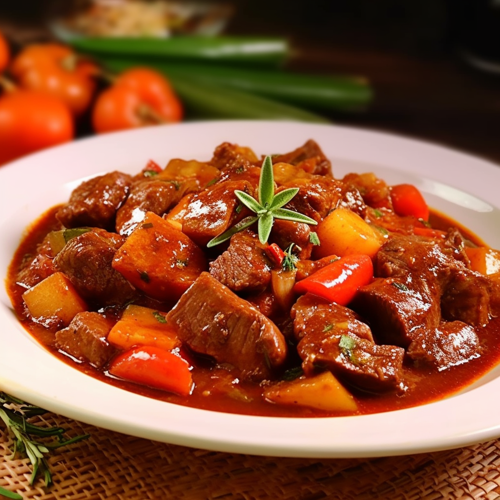

Caldereta

Ingredients
- 1 lbs. Beef cut into 1 in. cubes
- 1 large potato cubed
- 1 carrot sliced thick
- 1 onion thinly sliced
- 8 cloves garlic minced
- 1.5 cups peas
- 2 TBSP tomato paste
- 2 cans crushed tomatoes
- 1 TBSP beef bullion
- 3 bay leaves
Process
- sear beef cubes on medium-high heat in a large pot
- remove beef and add onion slices and cook until translucent
- add garlic and stir for a minute or two then add tomato paste
- add in carrots and potatoes and cover for about a minute
- then add back in the beef cubes with the cans of crushed tomatoes
- stir all together and add beef bullion and bay leaves
- cover and let simmer on low for an hour stiring occasionally
- add salt and pepper to taste
- water can be added if a thinner consistancy is desired